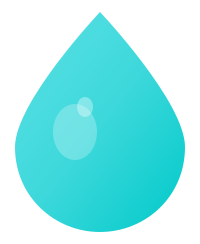

DISCOVER · IMMERSE
Hype
인터랙티브 롱폼, 가로형 영상과 사진. 깊게 몰입하고 오래 기억되는 메인 피드.

ZUKU by TRESILLOTRESILLO PRESENTS · ZUKU
보고, 넘기고, 직접 뛰어드는 순간까지.
ZUKU는 창작과 플레이가 하나로 이어지는 인터랙티브 UGC 미디어 플랫폼입니다.
THE PLATFORM
콘텐츠는 더 이상
재생만 되지 않습니다.
영상과 이미지, 인터랙티브 경험과 게임이 하나의 흐름 안에서 만납니다. 창작자는 형식의 경계 없이 표현하고, 사용자는 관객에서 플레이어로 자연스럽게 전환합니다.
DISCOVER · IMMERSE
인터랙티브 롱폼, 가로형 영상과 사진. 깊게 몰입하고 오래 기억되는 메인 피드.
VERTICAL · INSTANT
손끝에서 끊김 없이 이어지는 세로형 비디오. 지금의 감각을 가장 빠르게 만나는 피드.
PLAY · PARTICIPATE
브라우저에서 바로 시작하는 WASM·HTML5 게임. 감상에서 참여로 뛰어드는 플레이 공간.
BUILT WITH INTENT
인터랙티브 워크로드는 권한 없는 격리 경계 안에서 실행됩니다. 보안은 기능이 아니라 출발점입니다.
서비스 간 의존성, API 버전과 스키마를 명시합니다. 예측 가능한 경계가 안정적인 확장을 만듭니다.
CPU, 메모리, PID와 파일 디스크립터에 계약된 한도를 적용해 플랫폼과 창작물을 함께 보호합니다.
WebAssembly, Rust, Next.js와 표준 웹 기술을 기반으로 지속 가능하고 이식 가능한 생태계를 설계합니다.
보안 계약과 공개 표준은 투명하게, 격리 핵심 구현은 엄격하게 보호합니다.
THE COMPANY
트레실로는 익숙한 리듬에 새로운 박자를 더하는 기술 회사입니다. 우리는 사람의 표현을 확장하고, 창작물이 더 오래 살아남는 디지털 공간을 만듭니다.
START A CONVERSATION